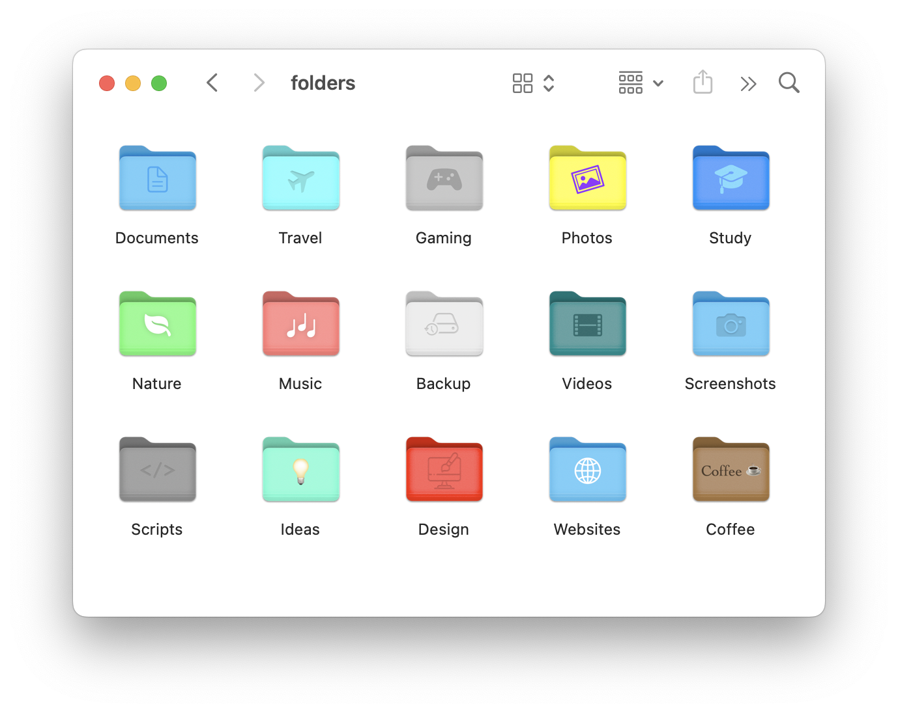

Iconify Pro allows you to customize any folder icon in your Mac. Keep your folders organized and navigate through finder in a visual and intuitive way.
Usage
You can modify any aspect of the folder icon from the main controls in the left sidebar.
- Background: choose a background from list in background controls section, in the left sidebar.
- Foreground: adjust the foreground size, position and rotation. If you are using a symbol as the foreground, adjust its color too.
- Blending: choose a predefined blending style or customize it from the 'advanced' tab. You can choose from many blending techniques.
From the right sidebar you can choose the image to use as the foreground.
- Symbol: select one of the 4000+ predefined symbols. You can search for a specific symbol by using the search bar on the top part of the window.
- Custom image: in case you want to use a custom image, simply go to the second tab and drop an image into the viewer.
- Text: you can use text as the foreground. Feel free to customize the text font and size. You can use emojis too!
Once you are happy with your icon, drag the destination folder onto the main viewer and hit 'Apply'.
